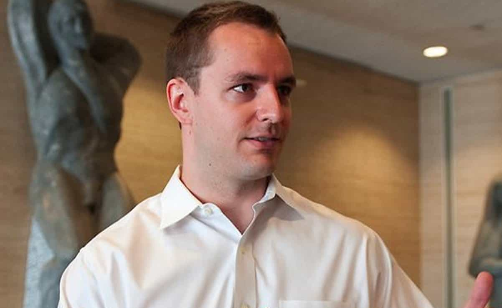

< < < Back
The French Have Elected Globocuck Emmanuel Macron And His Pro-Islamic Platform – Return Of Kings
Globalist Emmanuel Macron, who favors open borders and is backed by Rothschild bankers, has won a resounding victory in the run-off election for the French Presidency. Current estimates project that he will win around two-thirds of the vote. Marine Le Pen, his nationalist challenger, has unsurprisingly conceded.
Yet is there a much bigger story looming? Against the backdrop of this very sad day, which will probably seal France’s fate as an Islamized colony of Arabia and North Africa, the French media was banned from publishing news about a very embarrassing set of email leaks.
Rebel Media’s Jack Posobiec became the first well-known figure to tweet about supposed Macron revelations from 4chan’s /pol/ forum. These revelations include that the new President is gay, gets drugs bought for him by aides, and has offshore bank accounts for the purposes of tax evasion.
“We can’t talk about the hacking details, but Russia certainly did the hacking”

A number of media outlets have quoted ex-Hillary Clinton campaign manager Robby Mook to try and push the narrative that Russia hacked Macron. Mook is a partisan hack whose professional reputation depends on claiming that he would have won Hillary the White House if the “Russians” hadn’t gotten involved.
The most common response by the mainstream media about the leaked emails, if you exclude the French outlets prohibited by law from discussing them, has been to blame Russia directly or insinuate that it is responsible. Accompanying this has been an extreme unwillingness to talk about what the emails actually say.
NPR, for example, has continued its woeful record as a biased source. It was quick to carry the leftist torch with this article. Yet despite having easy access to 4chan’s /pol/ section, it mentioned none of the damaging allegations against Macron discussed in the forum, let alone covered the in-depth analysis undertaken by contributors there.
Even far less unreliable outlets like Britain’s The Telegraph have somewhat jumped on the bandwagon, quoting such disgraced “sources” as Hillary Clinton’s 2016 campaign manager, Robby Mook. Having been beaten by Donald Trump, who never had the powerful support of the media, Wall Street, or academics, cronies like Mook have every reason to say that Russia heads a global conspiracy to discredit leftist Western politicians. Again, this article and others like it lacked any consideration of the substance of the leaked emails.
Surprise, surprise… one of the allegations is that Emmanuel Macron is gay
GotNews, whose founder Chuck Johnson was instrumental in unveiling the UVA rape hoax, has seized upon news that the new French President may be on a gay dating email list. Called Vestiaire Gay, the website appeared in the trove of leaked messages. If authentic, Macron’s homosexuality would prove correct the insistence of many of his detractors that his marriage to a woman a quarter of a century older than him is a sham.
Macron possibly lying about his sexual orientation and the reason for his marriage would also raise serious questions about both his character and integrity. France faces close to insurmountable problems, especially of the Islamic and demographic varieties. A candidate already supported to the hilt by high finance who can’t even be open about which orifice he likes the most is one everyday Frenchmen and women not only do not need but should greatly fear.
Macron has taken legal action to counter claims he has offshore bank accounts, but the leaks suggest otherwise
The Cayman Islands, where many are saying Macron has an offshore account.
Just prior to the dumping of emails, Emmanuel Macron initiated legal action against Marine Le Pen for her comments about others’ allegations he has an offshore bank account in the Bahamas. Le Pen, however, did not come close to accusing him of this.
Weirdly enough, one of Jack Posobiec’s key disclosures has been 4chan’s work on suspected offshore financial assets held by Macron at, you guessed it, a Cayman Islands bank in the Caribbean:
If verified fully by the authorities (presuming they are even interested), this would be a supreme irony. Why? Because until he started his own movement, Macron was a key architect of the superficially anti-corporate Socialist government.
Why did the French people vote for more of the same?
After the Paris nightclub massacre and the Nice truck rampage, Return Of Kings hoped that a more sensible man than François Hollande (or even a woman in the form of Le Pen) would become the next President of France. But, alas, the French people have voted in an establishment figure, a globalist who up until recently was one of the top advisors to the Hollande regime.
While the Macron emails purportedly show top aides buying criminalized narcotics online and references to getting the boss some “c..” (cocaine?), it seems the French people have their own drug of choice: denial. Only this can explain the turn of events unfolding in France over the weekend.
Let’s face it: France is in for a tough five years–five years which in all likelihood will lead to a very miserable half-century. Be warned.
Read More: France’s Cucked Presidential Frontrunner Is Married To A Woman 24 Years Older Than Him